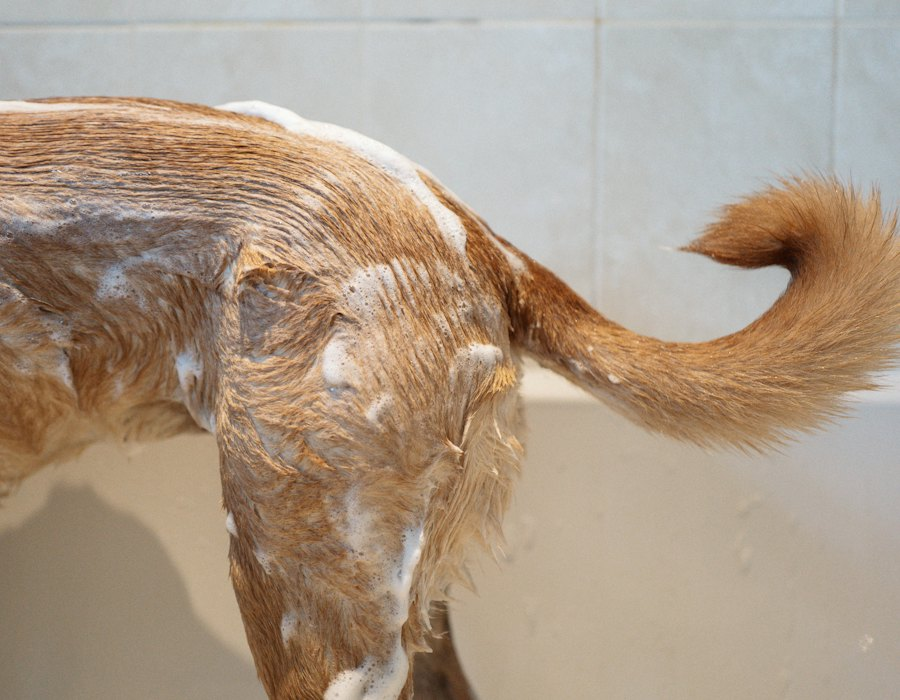
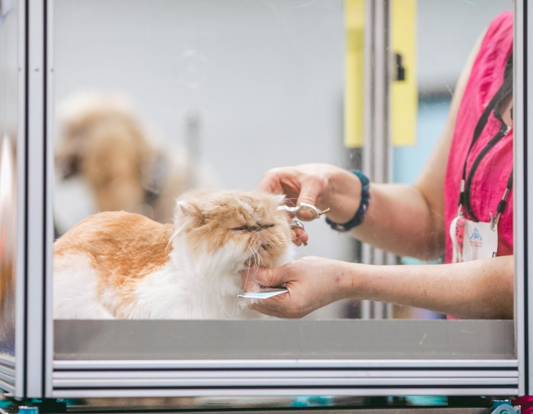

O que a gente faz
Do banho caprichado à tosa do jeitinho que você gosta.

Banho
Banho completo, secagem e escovação.
Tosa
Na máquina ou na tesoura, do jeito que o seu pet fica mais bonito.

Gatos também
Banho e tosa com paciência e cuidado para os felinos.
Táxi dog
A gente busca e leva o seu pet. Consulte os bairros atendidos.
Fotos ilustrativas. No site final entram as fotos dos pets atendidos no Esteticão.
Monte o agendamento do seu pet
Escolha o que o seu pet precisa e mande direto para o WhatsApp do Esteticão. A gente responde com o horário e o valor.

Sem tempo de trazer? Tem táxi dog.
O Esteticão busca o seu pet, dá aquele banho e leva de volta cheiroso. Pergunte se atendemos o seu bairro.
Perguntar sobre o táxi dogdos clientes que avaliaram recomendam o Esteticão no Facebook.
No site final entram os comentários dos tutores.
Horários
| Segunda | 9h às 17h |
|---|---|
| Terça | 9h às 17h |
| Quarta | 9h às 17h |
| Quinta | 9h às 17h |
| Sexta | 9h às 17h |
| Sábado | 9h às 15h |
| Domingo | Fechado |
Onde fica
- Endereço
- Rua Áureo Laurindo da Silva, 164
Jardim dos Ipês – Sumaré, SP - (19) 99758-6478
- Esteticão Banho e Tosa
Perguntas frequentes
Atendem gatos?
Sim. Gatos também tomam banho e fazem tosa no Esteticão.
Como funciona o táxi dog?
A gente busca o seu pet em casa e leva de volta depois do banho. Pergunte pelo WhatsApp se atendemos o seu bairro.
Quanto custa?
Depende do porte, do tipo de pelo e do serviço. Monte o agendamento acima e o Esteticão responde com o valor certinho.
Qual o horário?
De segunda a sexta, das 9h às 17h. Aos sábados, das 9h às 15h.